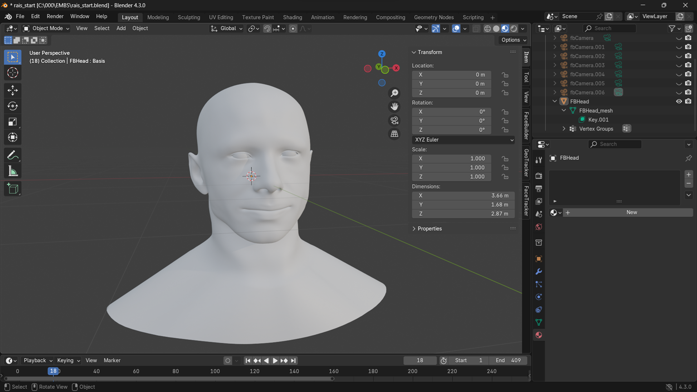
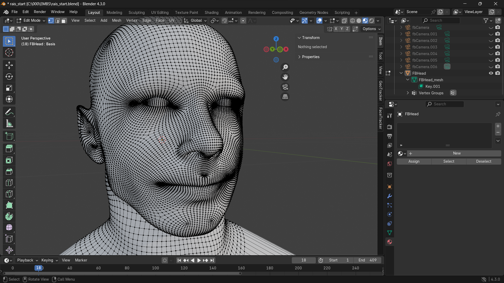
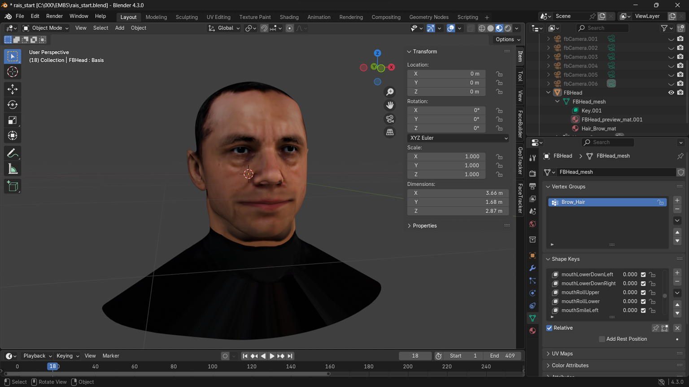
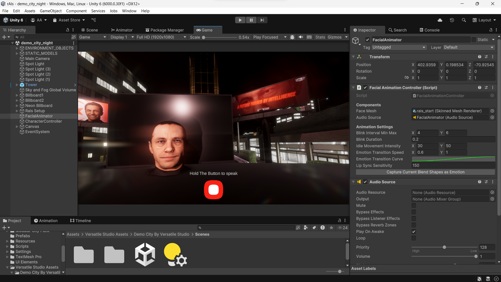
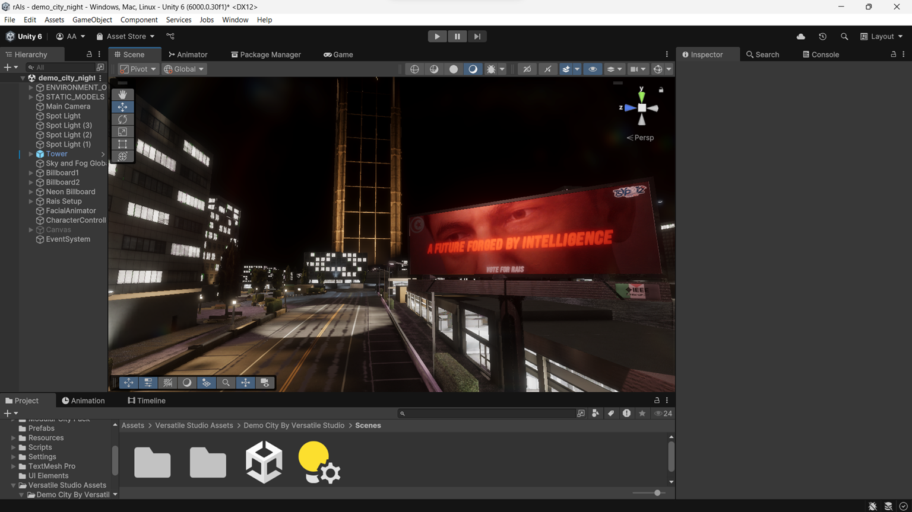
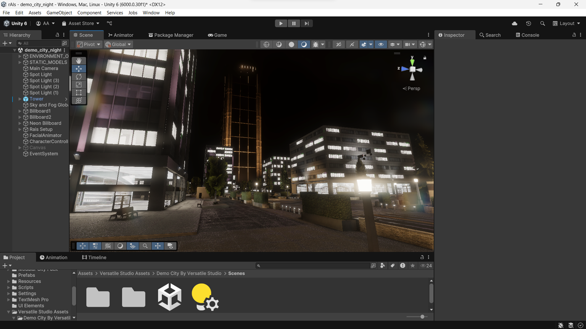
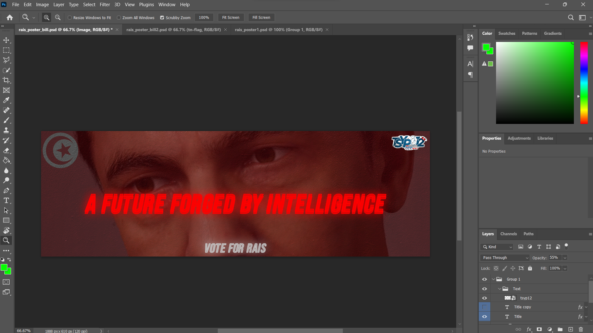

rAIs
Project Description
rAIs was our IEEE TEK-UP Student Branch's project for TSYP12 (Tunisia Section Young professionals Congress). The theme was "Tunisia 2056", and we thought, why not create an AI president? Kudos to Ghaith Fdaoui for coming up with the idea.
A lot of the stuff I made for this project was uncharted territory for me. First off, on the frontend, I created a detailed 3D character model from scratch using Blender, complete with facial expressions and lip-syncing capabilities through shape keys.



Once I had that model ready, I brought it into Unity and implemented a custom facial expression and lip-syncing system in C#. It was tough figuring out how to manipulate the shape keys in unity and syncing the lip syncing with the facial expressions, but when it was done, man, it was magical - you give it an audio file and some expression data, and rAIs starts talking naturally with matching expressions.

The environment hosting rAIs was my (rushed) attempt at a futuristic reimagining of Avenue Habib Bourguiba, created in Unity using a mix of modified existing assets and some custom-made 3D models.


L'Aljane Med Amine was the backend wizard on this one. We implemented a sophisticated system using Python and LangChain, creating a RAG (Retrieval-Augmented Generation) system fed with data about future Tunisia scenarios and IEEE information.
Initially, we tried using Llama 3.1 and running it locally on our laptops, but that proved to be way too slow. After a few failed attempts at optimization, we switched to Google's Gemini model. We spent a lot of time getting the backend to work smoothly with the front-end and trying to optimize response times.
The technical workflow is quite interesting:
- The Unity frontend captures user audio through the PC's microphone
- Audio is sent to our Python backend server
- The server transcribes the audio and processes it through our RAG system
- The response is generated along with appropriate facial expression data
- Text-to-speech converts the response to audio
- Both the audio file and facial expression data are sent back to Unity
- The custom animation system brings rAIs to life with synchronized speech and expressions
After lots of tweaking and testing (and like two sleepless nights), we got everything running well. The best part was seeing people's reactions when they tried it at TSYP - I can't express how special that felt, totally worth all the time and effort we spent!
Screenshots
